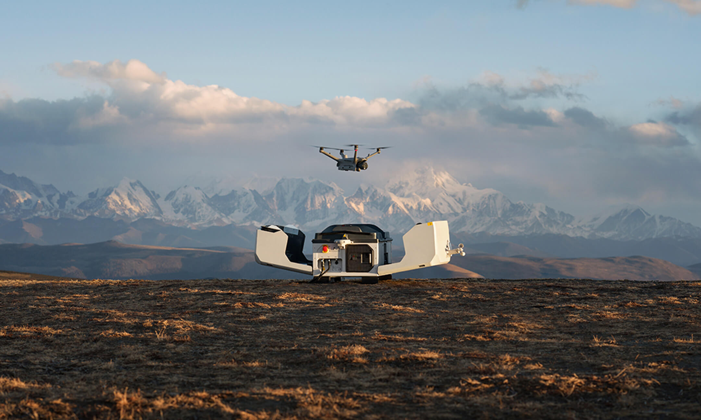

DJI AGRAS T50: The Revolution in Precision Agriculture

Meet the next generation of high-performance drones designed for maximum efficiency and precision. The DJI Agras T50 is a prof\essional agricultural drone built to cover vast areas with unmatched speed and accuracy.
Key Application Areas:
- High Capacity & Flow Rate: Spraying (40 kg / 16 L/min, up to 24 L/min with optional nozzles) and Spreading (50 kg / 75 L).
- Maximum Efficiency: Spray up to 21 hectares per hour.
- Precise Application: Dual Atomizing Spraying System and support for Rate Application (VRA) to optimize material usage.
- Versatility: Modes for fields, orchards (Orchard Mode), and undulating terrain (Terrain Following up to 50° slope).
- Safety: Multidirectional Obstacle Sensing via radar and binocular vision systems.
DJI MATRICE 30 SERIES: Compact Power for Enterprise Missions

The DJI M30/M30T is a versatile, all-weather enterprise drone, essential for critical operations where reliability and advanced sensor technology are paramount.
Key Application Areas:
- Public Safety & SAR (M30T): Rapid deployment for Search and Rescue (SAR) missions using an integrated Thermal Camera to locate heat signatures day or night. Critical support for fire services and law enforcement with real-time situational awareness.
- Infrastructure Inspections: Safe and detailed checks of critical assets. Use the 48 MP Zoom Camera for close-up inspection of power lines, wind turbines, bridges, and solar panels, identifying issues like overheating or damage.
- Mapping & Monitoring: Accurate data collection for 3D modelling and site monitoring using its high-resolution camera and Laser Range Finder (up to 1200m).
- Designed for Extremes: With an IP55 rating and operational range from -20 °C to 50 °C, the M30 Series delivers performance when it matters most.
DJI DOCK 3: Automated, All-Weather Drone Operations
The DJI Dock 3 is the ultimate automated hangar and charging station, transforming enterprise operations with 24/7 remote drone deployment. With its IP56 weather resistance and wide temperature range -30C to 50C, it is ready for any environment.
Core Applications:
- Public Safety: Rapid deployment for Search & Rescue (SAR) and real-time disaster monitoring.
- Infrastructure Inspection: Autonomous, repeatable checks of power lines, solar farms, telecom towers, and pipelines (including thermal surveys with the M4TD).
- Construction & Mapping: Automated site progress monitoring and data collection for accurate 3D modelling.
- Security & Surveillance:Perimeter protection and intelligent detection of moving subjects day and night.
- Key Advantage: For the first time, the Dock 3 supports Vehicle-Mounted Deployment, enabling quick relocation and on-demand inspections over long distances. Launch within 15 seconds and manage everything remotely via DJI FlightHub 2.
If you are interested, ask us!
Contact us for specific inquiries about custom projects, pricing, or specialized needs.
Contact Us